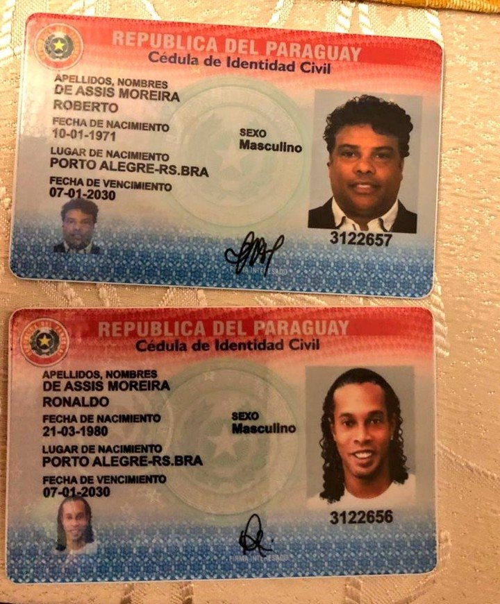

El ex futbolista brasileño Ronaldinho Gaúcho fue demorado este miércoles en Paraguay, adonde llegó para formar parte de un emprendimiento solidario y presentar también su libro "Genio de la vida". La Policía Nacional allanó la suite del Hotel del Yacht, donde la ex estrella de Barcelona estaba hospedado, porque ingresó al país con un presunto pasaporte falso, una situación que fue descubierta por Migraciones y el Ministerio del Interior. En una entrevista con medios locales, el ministro del Interior Euclides Acevedo confirmó que "hay una orden de detención contra Ronaldinho Gaucho y vamos a hacer cumplir la ley, tenemos la información que tiene documentación adulterada". Ronaldinho fue demorado en Paraguay por ingresar al país con documentos adulterados. Ronaldinho fue demorado en Paraguay por ingresar al país con documentos adulterados. "Mañana a las 8 de la mañana el fiscal va a decidir que va a pasar con el señor Ronaldinho", agregó el funcionario. Así, Dinho y su hermano Roberto De Assis Moreira -lo acompañó al país vecino- quedarán bajo custodia en sus habitaciones y deberán comparecer este jueves ante el Ministerio Público. Las cédulas de identidad que les secuestró la Policía a Ronaldinho y a su hermano. Las cédulas de identidad que les secuestró la Policía a Ronaldinho y a su hermano. Ronaldinho y su hermano manifestaron que viajaron a Paraguay por invitación de Nelson Belotti, dueño del casino "II Palazzo" y de paso fueron contactados por la representante de la fundación "Fraternidad Angelical", para contar con su participación en algunos eventos benéficos. La Policía Nacional realizó un allanamiento en el hotel donde se hospedó Ronaldinho. La Policía Nacional realizó un allanamiento en el hotel donde se hospedó Ronaldinho. La Justicia brasileña le quitó el pasaporte a Ronaldinho, a fines de 2018, cuando le impuso una multa ambiental de 2,5 millones de dólares, que Dinho jamás abonó. Ronaldinho fue demorado en Paraguay por ingresar al país con documentos adulterados. Ronaldinho fue demorado en Paraguay por ingresar al país con documentos adulterados. La multa ambiental fue por una contaminación a orillas del lago Guaíba, en la zona sur de Porto Alegre, donde el ex jugador construyó un muelle y una plataforma, en un área de preservación ambiental, según los informes de medios brasileños. Agentes de la policía allanan la habitación del hotel donde se encuentra hospedado Ronaldinho, en Asunción. (EFE) Agentes de la policía allanan la habitación del hotel donde se encuentra hospedado Ronaldinho, en Asunción. (EFE) El ex compañero de Lionel Messi en el equipo culé, que fue designado el año pasado embajador de turismo de Brasil, arribó por la mañana al aeropuerto internacional Silvio Pettirossi en Luque, cerca de Asunción. Dentro de las actividades, tenía previsto este jueves la presentación oficial de su libro “Genio de la vida” y la participación en el lanzamiento del programa “Móvil de salud de las niñas y niños" que consiste en un centro hospitalario ambulante con tecnología de punta y compuesto por médicos de primer nivel.
